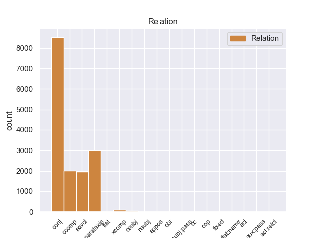
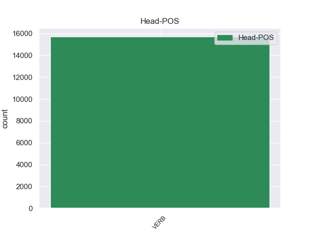
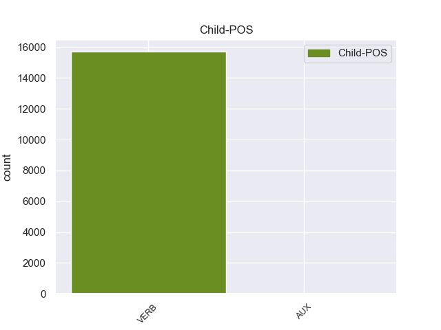

Distribution of features within this leaf



Agreement Rules sorted by frequency.
- When the dependent token is the conjunct(conj) of the head token,
1 Но _ _ _ _ 0 _ _ _
2 кто-то _ _ _ _ 0 _ _ _
3 идет идти VERB _ Aspect=Imp|Mood=Ind|Number=Sing|Person=3|Tense=Pres|VerbForm=Fin|Voice=Act 0 _ _ _
4 мне _ _ _ _ 0 _ _ _
5 навстречу _ _ _ _ 0 _ _ _
6 и _ _ _ _ 0 _ _ _
7 , _ _ _ _ 0 _ _ _
8 может _ _ _ _ 0 _ _ _
9 быть _ _ _ _ 0 _ _ _
10 , _ _ _ _ 0 _ _ _
11 прошел пройти VERB _ Aspect=Perf|Gender=Masc|Mood=Ind|Number=Sing|Tense=Past|VerbForm=Fin|Voice=Act 3 conj 3:conj _
12 уже _ _ _ _ 0 _ _ _
13 пол _ _ _ _ 0 _ _ _
14 пути _ _ _ _ 0 _ _ _
15 … _ _ _ _ 0 _ _ _
1 Но _ _ _ _ 0 _ _ _
2 кто-то _ _ _ _ 0 _ _ _
3 идет _ _ _ _ 0 _ _ _
4 мне _ _ _ _ 0 _ _ _
5 навстречу _ _ _ _ 0 _ _ _
6 и _ _ _ _ 0 _ _ _
7 , _ _ _ _ 0 _ _ _
8 может мочь VERB _ Aspect=Imp|Mood=Ind|Number=Sing|Person=3|Tense=Pres|VerbForm=Fin|Voice=Act 11 parataxis 11:parataxis _
9 быть _ _ _ _ 0 _ _ _
10 , _ _ _ _ 0 _ _ _
11 прошел пройти VERB _ Aspect=Perf|Gender=Masc|Mood=Ind|Number=Sing|Tense=Past|VerbForm=Fin|Voice=Act 0 _ _ _
12 уже _ _ _ _ 0 _ _ _
13 пол _ _ _ _ 0 _ _ _
14 пути _ _ _ _ 0 _ _ _
15 … _ _ _ _ 0 _ _ _
1 - _ _ _ _ 0 _ _ _
2 Если _ _ _ _ 0 _ _ _
3 дорога _ _ _ _ 0 _ _ _
4 разрушится _ _ _ _ 0 _ _ _
5 , _ _ _ _ 0 _ _ _
6 она _ _ _ _ 0 _ _ _
7 исчезнет _ _ _ _ 0 _ _ _
8 , _ _ _ _ 0 _ _ _
9 и _ _ _ _ 0 _ _ _
10 никто _ _ _ _ 0 _ _ _
11 не _ _ _ _ 0 _ _ _
12 узнает узнавать VERB _ Aspect=Imp|Mood=Ind|Number=Sing|Person=3|Tense=Pres|VerbForm=Fin|Voice=Act 0 _ _ _
13 даже _ _ _ _ 0 _ _ _
14 , _ _ _ _ 0 _ _ _
15 что _ _ _ _ 0 _ _ _
16 тут _ _ _ _ 0 _ _ _
17 была быть VERB _ Aspect=Imp|Gender=Fem|Mood=Ind|Number=Sing|Tense=Past|VerbForm=Fin|Voice=Act 12 ccomp 12:ccomp _
18 дорога _ _ _ _ 0 _ _ _
19 . _ _ _ _ 0 _ _ _
1 - _ _ _ _ 0 _ _ _
2 Если _ _ _ _ 0 _ _ _
3 дорога _ _ _ _ 0 _ _ _
4 разрушится разрушиться VERB _ Aspect=Perf|Mood=Ind|Number=Sing|Person=3|Tense=Fut|VerbForm=Fin|Voice=Mid 7 advcl 7:advcl SpaceAfter=No
5 , _ _ _ _ 0 _ _ _
6 она _ _ _ _ 0 _ _ _
7 исчезнет исчезнуть VERB _ Aspect=Perf|Mood=Ind|Number=Sing|Person=3|Tense=Fut|VerbForm=Fin|Voice=Act 0 _ _ _
8 , _ _ _ _ 0 _ _ _
9 и _ _ _ _ 0 _ _ _
10 никто _ _ _ _ 0 _ _ _
11 не _ _ _ _ 0 _ _ _
12 узнает _ _ _ _ 0 _ _ _
13 даже _ _ _ _ 0 _ _ _
14 , _ _ _ _ 0 _ _ _
15 что _ _ _ _ 0 _ _ _
16 тут _ _ _ _ 0 _ _ _
17 была _ _ _ _ 0 _ _ _
18 дорога _ _ _ _ 0 _ _ _
19 . _ _ _ _ 0 _ _ _
1 - _ _ _ _ 0 _ _ _
2 Разве _ _ _ _ 0 _ _ _
3 мы _ _ _ _ 0 _ _ _
4 знаем знать VERB _ Aspect=Imp|Mood=Ind|Number=Plur|Person=1|Tense=Pres|VerbForm=Fin|Voice=Act 0 _ _ _
5 , _ _ _ _ 0 _ _ _
6 почему _ _ _ _ 0 _ _ _
7 дорогу _ _ _ _ 0 _ _ _
8 забросили забросить VERB _ Aspect=Perf|Mood=Ind|Number=Plur|Tense=Past|VerbForm=Fin|Voice=Act 4 xcomp 4:xcomp SpaceAfter=No
9 ? _ _ _ _ 0 _ _ _
1 Дети _ _ _ _ 0 _ _ _
2 часами _ _ _ _ 0 _ _ _
3 могли _ _ _ _ 0 _ _ _
4 следить _ _ _ _ 0 _ _ _
5 за _ _ _ _ 0 _ _ _
6 дятлом _ _ _ _ 0 _ _ _
7 , _ _ _ _ 0 _ _ _
8 который _ _ _ _ 0 _ _ _
9 с _ _ _ _ 0 _ _ _
10 таким _ _ _ _ 0 _ _ _
11 неистовством _ _ _ _ 0 _ _ _
12 долбил _ _ _ _ 0 _ _ _
13 клювом _ _ _ _ 0 _ _ _
14 сосну _ _ _ _ 0 _ _ _
15 , _ _ _ _ 0 _ _ _
16 что _ _ _ _ 0 _ _ _
17 казалось казаться VERB _ Aspect=Imp|Gender=Neut|Mood=Ind|Number=Sing|Tense=Past|VerbForm=Fin|Voice=Mid 0 _ _ _
18 , _ _ _ _ 0 _ _ _
19 вот-вот _ _ _ _ 0 _ _ _
20 отвалится отвалиться VERB _ Aspect=Perf|Mood=Ind|Number=Sing|Person=3|Tense=Fut|VerbForm=Fin|Voice=Mid 17 csubj 17:csubj _
21 его _ _ _ _ 0 _ _ _
22 остренькая _ _ _ _ 0 _ _ _
23 головка _ _ _ _ 0 _ _ _
24 . _ _ _ _ 0 _ _ _
1 Потом _ _ _ _ 0 _ _ _
2 органическая _ _ _ _ 0 _ _ _
3 фаза _ _ _ _ 0 _ _ _
4 отслаивается отслаиваться VERB _ Aspect=Imp|Mood=Ind|Number=Sing|Person=3|Tense=Pres|VerbForm=Fin|Voice=Mid 0 _ _ _
5 ( _ _ _ _ 0 _ _ _
6 она _ _ _ _ 0 _ _ _
7 не _ _ _ _ 0 _ _ _
8 смешивается смешиваться VERB _ Aspect=Imp|Mood=Ind|Number=Sing|Person=3|Tense=Pres|VerbForm=Fin|Voice=Mid 4 appos 4:appos _
9 с _ _ _ _ 0 _ _ _
10 водой _ _ _ _ 0 _ _ _
11 ) _ _ _ _ 0 _ _ _
12 и _ _ _ _ 0 _ _ _
13 поступает _ _ _ _ 0 _ _ _
14 в _ _ _ _ 0 _ _ _
15 реэкстрактор _ _ _ _ 0 _ _ _
16 . _ _ _ _ 0 _ _ _
1 - _ _ _ _ 0 _ _ _
2 А _ _ _ _ 0 _ _ _
3 я _ _ _ _ 0 _ _ _
4 тебя _ _ _ _ 0 _ _ _
5 снегом _ _ _ _ 0 _ _ _
6 тру тереть VERB _ Aspect=Imp|Mood=Ind|Number=Sing|Person=1|Tense=Pres|VerbForm=Fin|Voice=Act 0 _ _ _
7 - _ _ _ _ 0 _ _ _
8 тру тереть VERB _ Aspect=Imp|Mood=Ind|Number=Sing|Person=1|Tense=Pres|VerbForm=Fin|Voice=Act 6 flat 6:flat SpaceAfter=No
9 , _ _ _ _ 0 _ _ _
10 совсем _ _ _ _ 0 _ _ _
11 было _ _ _ _ 0 _ _ _
12 уши _ _ _ _ 0 _ _ _
13 отморозил _ _ _ _ 0 _ _ _
14 . _ _ _ _ 0 _ _ _
1 Раньше _ _ _ _ 0 _ _ _
2 считалось считать VERB _ Aspect=Imp|Gender=Neut|Mood=Ind|Number=Sing|Tense=Past|VerbForm=Fin|Voice=Pass 0 _ _ _
3 , _ _ _ _ 0 _ _ _
4 да _ _ _ _ 0 _ _ _
5 и _ _ _ _ 0 _ _ _
6 сейчас _ _ _ _ 0 _ _ _
7 от _ _ _ _ 0 _ _ _
8 этого _ _ _ _ 0 _ _ _
9 еще _ _ _ _ 0 _ _ _
10 не _ _ _ _ 0 _ _ _
11 избавились _ _ _ _ 0 _ _ _
12 , _ _ _ _ 0 _ _ _
13 выступить _ _ _ _ 0 _ _ _
14 против _ _ _ _ 0 _ _ _
15 какого-то _ _ _ _ 0 _ _ _
16 - _ _ _ _ 0 _ _ _
17 конкретного _ _ _ _ 0 _ _ _
18 советского _ _ _ _ 0 _ _ _
19 или _ _ _ _ 0 _ _ _
20 партийного _ _ _ _ 0 _ _ _
21 руководителя _ _ _ _ 0 _ _ _
22 , _ _ _ _ 0 _ _ _
23 который _ _ _ _ 0 _ _ _
24 санкционировал _ _ _ _ 0 _ _ _
25 неумное _ _ _ _ 0 _ _ _
26 решение _ _ _ _ 0 _ _ _
27 , _ _ _ _ 0 _ _ _
28 - _ _ _ _ 0 _ _ _
29 значит значить VERB _ Aspect=Imp|Mood=Ind|Number=Sing|Person=3|Tense=Pres|VerbForm=Fin|Voice=Act 2 csubj:pass 2:csubj:pass _
30 выступить _ _ _ _ 0 _ _ _
31 против _ _ _ _ 0 _ _ _
32 Советской _ _ _ _ 0 _ _ _
33 власти _ _ _ _ 0 _ _ _
34 или _ _ _ _ 0 _ _ _
35 против _ _ _ _ 0 _ _ _
36 партии _ _ _ _ 0 _ _ _
37 . _ _ _ _ 0 _ _ _
1 От _ _ _ _ 0 _ _ _
2 вас _ _ _ _ 0 _ _ _
3 это _ _ _ _ 0 _ _ _
4 зависит зависеть VERB _ Aspect=Imp|Mood=Ind|Number=Sing|Person=3|Tense=Pres|VerbForm=Fin|Voice=Act 0 _ _ _
5 , _ _ _ _ 0 _ _ _
6 какой _ _ _ _ 0 _ _ _
7 вы _ _ _ _ 0 _ _ _
8 сделаете делать VERB _ Aspect=Perf|Mood=Ind|Number=Plur|Person=2|Tense=Fut|VerbForm=Fin|Voice=Act 4 nsubj 4:nsubj _
9 выбор _ _ _ _ 0 _ _ _
10 и _ _ _ _ 0 _ _ _
11 как _ _ _ _ 0 _ _ _
12 воспользуетесь _ _ _ _ 0 _ _ _
13 полученными _ _ _ _ 0 _ _ _
14 знаниями _ _ _ _ 0 _ _ _
15 . _ _ _ _ 0 _ _ _
1 Потому _ _ _ _ 0 _ _ _
2 что _ _ _ _ 0 _ _ _
3 она _ _ _ _ 0 _ _ _
4 уже _ _ _ _ 0 _ _ _
5 ничего _ _ _ _ 0 _ _ _
6 не _ _ _ _ 0 _ _ _
7 может мочь VERB _ Aspect=Imp|Mood=Ind|Number=Sing|Person=3|Tense=Pres|VerbForm=Fin|Voice=Act 0 _ _ _
8 делать _ _ _ _ 0 _ _ _
9 хорошо _ _ _ _ 0 _ _ _
10 , _ _ _ _ 0 _ _ _
11 и _ _ _ _ 0 _ _ _
12 потому _ _ _ _ 0 _ _ _
13 что _ _ _ _ 0 _ _ _
14 реальной _ _ _ _ 0 _ _ _
15 целью _ _ _ _ 0 _ _ _
16 всех _ _ _ _ 0 _ _ _
17 участников _ _ _ _ 0 _ _ _
18 системы _ _ _ _ 0 _ _ _
19 является являться VERB _ Aspect=Imp|Mood=Ind|Number=Sing|Person=3|Tense=Pres|VerbForm=Fin|Voice=Mid 7 cc 7:cc _
20 украсть _ _ _ _ 0 _ _ _
21 как _ _ _ _ 0 _ _ _
22 можно _ _ _ _ 0 _ _ _
23 больше _ _ _ _ 0 _ _ _
24 денег _ _ _ _ 0 _ _ _
25 . _ _ _ _ 0 _ _ _
1 Родственник _ _ _ _ 0 _ _ _
2 Камалова _ _ _ _ 0 _ _ _
3 прокурор _ _ _ _ 0 _ _ _
4 города _ _ _ _ 0 _ _ _
5 Уфы _ _ _ _ 0 _ _ _
6 Зайнетдинов _ _ _ _ 0 _ _ _
7 , _ _ _ _ 0 _ _ _
8 пишет _ _ _ _ 0 _ _ _
9 в _ _ _ _ 0 _ _ _
10 " _ _ _ _ 0 _ _ _
11 Правду _ _ _ _ 0 _ _ _
12 " _ _ _ _ 0 _ _ _
13 Р. _ _ _ _ 0 _ _ _
14 Богданов _ _ _ _ 0 _ _ _
15 , _ _ _ _ 0 _ _ _
16 фабрикует _ _ _ _ 0 _ _ _
17 уголовное _ _ _ _ 0 _ _ _
18 дело _ _ _ _ 0 _ _ _
19 , _ _ _ _ 0 _ _ _
20 и _ _ _ _ 0 _ _ _
21 пошло пойти VERB _ Aspect=Perf|Gender=Neut|Mood=Ind|Number=Sing|Tense=Past|VerbForm=Fin|Voice=Act 0 _ _ _
22 - _ _ _ _ 0 _ _ _
23 поехало поехать VERB _ Aspect=Perf|Gender=Neut|Mood=Ind|Number=Sing|Tense=Past|VerbForm=Fin|Voice=Act 21 fixed 21:fixed _
24 следствие _ _ _ _ 0 _ _ _
25 , _ _ _ _ 0 _ _ _
26 принудительная _ _ _ _ 0 _ _ _
27 судебно-психиатрическая _ _ _ _ 0 _ _ _
28 экспертиза _ _ _ _ 0 _ _ _
29 , _ _ _ _ 0 _ _ _
30 лишение _ _ _ _ 0 _ _ _
31 депутатского _ _ _ _ 0 _ _ _
32 мандата _ _ _ _ 0 _ _ _
33 , _ _ _ _ 0 _ _ _
34 партийности _ _ _ _ 0 _ _ _
35 . _ _ _ _ 0 _ _ _
1 Сижу _ _ _ _ 0 _ _ _
2 со _ _ _ _ 0 _ _ _
3 старенькой _ _ _ _ 0 _ _ _
4 бабушкой _ _ _ _ 0 _ _ _
5 - _ _ _ _ 0 _ _ _
6 Мария _ _ _ _ 0 _ _ _
7 Ивановна _ _ _ _ 0 _ _ _
8 Тюленева _ _ _ _ 0 _ _ _
9 , _ _ _ _ 0 _ _ _
10 ей _ _ _ _ 0 _ _ _
11 92 _ _ _ _ 0 _ _ _
12 годка _ _ _ _ 0 _ _ _
13 , _ _ _ _ 0 _ _ _
14 и _ _ _ _ 0 _ _ _
15 спрашиваю _ _ _ _ 0 _ _ _
16 : _ _ _ _ 0 _ _ _
17 " _ _ _ _ 0 _ _ _
18 Баба _ _ _ _ 0 _ _ _
19 Маня _ _ _ _ 0 _ _ _
20 , _ _ _ _ 0 _ _ _
21 а _ _ _ _ 0 _ _ _
22 правда _ _ _ _ 0 _ _ _
23 , _ _ _ _ 0 _ _ _
24 что _ _ _ _ 0 _ _ _
25 ночна _ _ _ _ 0 _ _ _
26 кукушка _ _ _ _ 0 _ _ _
27 всё _ _ _ _ 0 _ _ _
28 равно _ _ _ _ 0 _ _ _
29 перекукует _ _ _ _ 0 _ _ _
30 ? _ _ _ _ 0 _ _ _
31 " _ _ _ _ 0 _ _ _
32 Она _ _ _ _ 0 _ _ _
33 отвечает _ _ _ _ 0 _ _ _
34 : _ _ _ _ 0 _ _ _
35 " _ _ _ _ 0 _ _ _
36 Перекукует перекуковать VERB _ Aspect=Perf|Mood=Ind|Number=Sing|Person=3|Tense=Fut|VerbForm=Fin|Voice=Act 0 _ _ _
37 - _ _ _ _ 0 _ _ _
38 то _ _ _ _ 0 _ _ _
39 перекукует перекуковать VERB _ Aspect=Perf|Mood=Ind|Number=Sing|Person=3|Tense=Fut|VerbForm=Fin|Voice=Act 36 flat:name 36:flat SpaceAfter=No
40 , _ _ _ _ 0 _ _ _
41 дак _ _ _ _ 0 _ _ _
42 справедливо _ _ _ _ 0 _ _ _
43 куковать _ _ _ _ 0 _ _ _
44 - _ _ _ _ 0 _ _ _
45 то _ _ _ _ 0 _ _ _
46 надо _ _ _ _ 0 _ _ _
47 . _ _ _ _ 0 _ _ _
1 Что _ _ _ _ 0 _ _ _
2 в _ _ _ _ 0 _ _ _
3 этих _ _ _ _ 0 _ _ _
4 рассказах _ _ _ _ 0 _ _ _
5 было _ _ _ _ 0 _ _ _
6 правдой _ _ _ _ 0 _ _ _
7 , _ _ _ _ 0 _ _ _
8 а _ _ _ _ 0 _ _ _
9 что _ _ _ _ 0 _ _ _
10 выдумкой _ _ _ _ 0 _ _ _
11 - _ _ _ _ 0 _ _ _
12 поди пойти VERB _ Aspect=Perf|Mood=Imp|Number=Sing|Person=2|VerbForm=Fin|Voice=Act 13 obl 13:obl _
13 разбери разобрать VERB _ Aspect=Perf|Mood=Imp|Number=Sing|Person=2|VerbForm=Fin|Voice=Act 0 _ _ _
14 . _ _ _ _ 0 _ _ _
1 Позднее _ _ _ _ 0 _ _ _
2 Уиндзор _ _ _ _ 0 _ _ _
3 основал _ _ _ _ 0 _ _ _
4 три _ _ _ _ 0 _ _ _
5 журнала _ _ _ _ 0 _ _ _
6 в _ _ _ _ 0 _ _ _
7 Чикаго _ _ _ _ 0 _ _ _
8 , _ _ _ _ 0 _ _ _
9 последний _ _ _ _ 0 _ _ _
10 из _ _ _ _ 0 _ _ _
11 которых _ _ _ _ 0 _ _ _
12 стал стать VERB _ Aspect=Perf|Gender=Masc|Mood=Ind|Number=Sing|Tense=Past|VerbForm=Fin|Voice=Mid 0 _ _ _
13 наиболее _ _ _ _ 0 _ _ _
14 известным _ _ _ _ 0 _ _ _
15 - _ _ _ _ 0 _ _ _
16 это _ _ _ _ 0 _ _ _
17 и _ _ _ _ 0 _ _ _
18 есть быть AUX _ Aspect=Imp|Mood=Ind|Number=Sing|Person=3|Tense=Pres|VerbForm=Fin|Voice=Act 12 cop 12:cop _
19 Popular _ _ _ _ 0 _ _ _
20 Mechanics _ _ _ _ 0 _ _ _
21 . _ _ _ _ 0 _ _ _
1 И _ _ _ _ 0 _ _ _
2 так _ _ _ _ 0 _ _ _
3 как _ _ _ _ 0 _ _ _
4 основным _ _ _ _ 0 _ _ _
5 законом _ _ _ _ 0 _ _ _
6 клептократии _ _ _ _ 0 _ _ _
7 является являться VERB _ Aspect=Imp|Mood=Ind|Number=Sing|Person=3|Tense=Pres|VerbForm=Fin|Voice=Mid 0 _ _ _
8 тот _ _ _ _ 0 _ _ _
9 , _ _ _ _ 0 _ _ _
10 что _ _ _ _ 0 _ _ _
11 клептократия _ _ _ _ 0 _ _ _
12 ворует воровать VERB _ Aspect=Imp|Mood=Ind|Number=Sing|Person=3|Tense=Pres|VerbForm=Fin|Voice=Act 7 acl 7:acl _
13 деньги _ _ _ _ 0 _ _ _
14 всегда _ _ _ _ 0 _ _ _
15 , _ _ _ _ 0 _ _ _
16 даже _ _ _ _ 0 _ _ _
17 у _ _ _ _ 0 _ _ _
18 собственных _ _ _ _ 0 _ _ _
19 боссов _ _ _ _ 0 _ _ _
20 , _ _ _ _ 0 _ _ _
21 то _ _ _ _ 0 _ _ _
22 методы _ _ _ _ 0 _ _ _
23 эти _ _ _ _ 0 _ _ _
24 будут _ _ _ _ 0 _ _ _
25 так _ _ _ _ 0 _ _ _
26 же _ _ _ _ 0 _ _ _
27 глупы _ _ _ _ 0 _ _ _
28 и _ _ _ _ 0 _ _ _
29 очевидны _ _ _ _ 0 _ _ _
30 , _ _ _ _ 0 _ _ _
31 как _ _ _ _ 0 _ _ _
32 в _ _ _ _ 0 _ _ _
33 Грузии _ _ _ _ 0 _ _ _
34 . _ _ _ _ 0 _ _ _
1 Забой _ _ _ _ 0 _ _ _
2 скота _ _ _ _ 0 _ _ _
3 с _ _ _ _ 0 _ _ _
4 соблюдением _ _ _ _ 0 _ _ _
5 религиозных _ _ _ _ 0 _ _ _
6 обычаев _ _ _ _ 0 _ _ _
7 будет быть AUX _ Aspect=Imp|Mood=Ind|Number=Sing|Person=3|Tense=Pres|VerbForm=Fin|Voice=Act 8 aux:pass 8:aux:pass _
8 производится производить VERB _ Aspect=Imp|Mood=Ind|Number=Sing|Person=3|Tense=Pres|VerbForm=Fin|Voice=Pass 0 _ _ _
9 на _ _ _ _ 0 _ _ _
10 самой _ _ _ _ 0 _ _ _
11 большой _ _ _ _ 0 _ _ _
12 в _ _ _ _ 0 _ _ _
13 мире _ _ _ _ 0 _ _ _
14 бойне _ _ _ _ 0 _ _ _
15 / _ _ _ _ 0 _ _ _
16 площадью _ _ _ _ 0 _ _ _
17 300 _ _ _ _ 0 _ _ _
18 тыс _ _ _ _ 0 _ _ _
19 кв _ _ _ _ 0 _ _ _
20 метров _ _ _ _ 0 _ _ _
21 / _ _ _ _ 0 _ _ _
22 вблизи _ _ _ _ 0 _ _ _
23 Мекки _ _ _ _ 0 _ _ _
24 , _ _ _ _ 0 _ _ _
25 на _ _ _ _ 0 _ _ _
26 которой _ _ _ _ 0 _ _ _
27 работают _ _ _ _ 0 _ _ _
28 20 _ _ _ _ 0 _ _ _
29 тыс _ _ _ _ 0 _ _ _
30 мясников _ _ _ _ 0 _ _ _
31 . _ _ _ _ 0 _ _ _
1 Перес _ _ _ _ 0 _ _ _
2 провел провести VERB _ Aspect=Perf|Gender=Masc|Mood=Ind|Number=Sing|Tense=Past|VerbForm=Fin|Voice=Act 0 _ _ _
3 в _ _ _ _ 0 _ _ _
4 воскресенье _ _ _ _ 0 _ _ _
5 45-минутную _ _ _ _ 0 _ _ _
6 встречу _ _ _ _ 0 _ _ _
7 с _ _ _ _ 0 _ _ _
8 генсеком _ _ _ _ 0 _ _ _
9 ООН _ _ _ _ 0 _ _ _
10 , _ _ _ _ 0 _ _ _
11 в _ _ _ _ 0 _ _ _
12 ходе _ _ _ _ 0 _ _ _
13 которой _ _ _ _ 0 _ _ _
14 он _ _ _ _ 0 _ _ _
15 также _ _ _ _ 0 _ _ _
16 призвал призвать VERB _ Aspect=Perf|Gender=Masc|Mood=Ind|Number=Sing|Tense=Past|VerbForm=Fin|Voice=Act 2 acl:relcl 2:acl:relcl _
17 международное _ _ _ _ 0 _ _ _
18 сообщество _ _ _ _ 0 _ _ _
19 оказать _ _ _ _ 0 _ _ _
20 давление _ _ _ _ 0 _ _ _
21 на _ _ _ _ 0 _ _ _
22 палестинское _ _ _ _ 0 _ _ _
23 руководство _ _ _ _ 0 _ _ _
24 , _ _ _ _ 0 _ _ _
25 чтобы _ _ _ _ 0 _ _ _
26 " _ _ _ _ 0 _ _ _
27 положить _ _ _ _ 0 _ _ _
28 конец _ _ _ _ 0 _ _ _
29 насилию _ _ _ _ 0 _ _ _
30 и _ _ _ _ 0 _ _ _
31 террору _ _ _ _ 0 _ _ _
32 " _ _ _ _ 0 _ _ _
33 . _ _ _ _ 0 _ _ _
Disagree Examples:
1 - _ _ _ _ 0 _ _ _
2 Садитесь садиться VERB _ Aspect=Imp|Mood=Imp|Number=Plur|Person=2|VerbForm=Fin|Voice=Mid 0 _ _ _
3 , _ _ _ _ 0 _ _ _
4 пожалуйста _ _ _ _ 0 _ _ _
5 , _ _ _ _ 0 _ _ _
6 - _ _ _ _ 0 _ _ _
7 сказал сказать VERB _ Aspect=Perf|Gender=Masc|Mood=Ind|Number=Sing|Tense=Past|VerbForm=Fin|Voice=Act 2 parataxis 2:parataxis _
8 он _ _ _ _ 0 _ _ _
9 , _ _ _ _ 0 _ _ _
10 не _ _ _ _ 0 _ _ _
11 поднимая _ _ _ _ 0 _ _ _
12 глаз _ _ _ _ 0 _ _ _
13 . _ _ _ _ 0 _ _ _
1 - _ _ _ _ 0 _ _ _
2 Да _ _ _ _ 0 _ _ _
3 ты _ _ _ _ 0 _ _ _
4 бери брать VERB _ Aspect=Imp|Mood=Imp|Number=Sing|Person=2|VerbForm=Fin|Voice=Act 0 _ _ _
5 ее _ _ _ _ 0 _ _ _
6 , _ _ _ _ 0 _ _ _
7 бери _ _ _ _ 0 _ _ _
8 ! _ _ _ _ 0 _ _ _
9 - _ _ _ _ 0 _ _ _
10 закричал закричать VERB _ Aspect=Perf|Gender=Masc|Mood=Ind|Number=Sing|Tense=Past|VerbForm=Fin|Voice=Act 4 parataxis 4:parataxis _
11 Савельев _ _ _ _ 0 _ _ _
12 . _ _ _ _ 0 _ _ _
1 - _ _ _ _ 0 _ _ _
2 Нет _ _ _ _ 0 _ _ _
3 , _ _ _ _ 0 _ _ _
4 разрешите разрешить VERB _ Aspect=Perf|Mood=Imp|Number=Plur|Person=2|VerbForm=Fin|Voice=Act 9 parataxis 9:parataxis SpaceAfter=No
5 , _ _ _ _ 0 _ _ _
6 я _ _ _ _ 0 _ _ _
7 вам _ _ _ _ 0 _ _ _
8 все-таки _ _ _ _ 0 _ _ _
9 объясню объяснить VERB _ Aspect=Perf|Mood=Ind|Number=Sing|Person=1|Tense=Fut|VerbForm=Fin|Voice=Act 0 _ _ _
10 , _ _ _ _ 0 _ _ _
11 - _ _ _ _ 0 _ _ _
12 не _ _ _ _ 0 _ _ _
13 унималась _ _ _ _ 0 _ _ _
14 Ефимова _ _ _ _ 0 _ _ _
15 . _ _ _ _ 0 _ _ _
1 - _ _ _ _ 0 _ _ _
2 Пойдемте пойти VERB _ Aspect=Perf|Mood=Imp|Number=Plur|Person=1|VerbForm=Fin|Voice=Act 0 _ _ _
3 , _ _ _ _ 0 _ _ _
4 пойдемте _ _ _ _ 0 _ _ _
5 ! _ _ _ _ 0 _ _ _
6 - _ _ _ _ 0 _ _ _
7 и _ _ _ _ 0 _ _ _
8 , _ _ _ _ 0 _ _ _
9 взяв _ _ _ _ 0 _ _ _
10 ее _ _ _ _ 0 _ _ _
11 под _ _ _ _ 0 _ _ _
12 руку _ _ _ _ 0 _ _ _
13 , _ _ _ _ 0 _ _ _
14 ввел ввести VERB _ Aspect=Perf|Gender=Masc|Mood=Ind|Number=Sing|Tense=Past|VerbForm=Fin|Voice=Act 2 parataxis 2:parataxis _
15 в _ _ _ _ 0 _ _ _
16 кабинет _ _ _ _ 0 _ _ _
17 . _ _ _ _ 0 _ _ _
1 " _ _ _ _ 0 _ _ _
2 Теперь _ _ _ _ 0 _ _ _
3 , _ _ _ _ 0 _ _ _
4 говорит говорить VERB _ Aspect=Imp|Mood=Ind|Number=Sing|Person=3|Tense=Pres|VerbForm=Fin|Voice=Act 6 parataxis 6:parataxis SpaceAfter=No
5 , _ _ _ _ 0 _ _ _
6 погаси гасить VERB _ Aspect=Perf|Mood=Imp|Number=Sing|Person=2|VerbForm=Fin|Voice=Act 0 _ _ _
7 ты _ _ _ _ 0 _ _ _
8 мою _ _ _ _ 0 _ _ _
9 " _ _ _ _ 0 _ _ _
10 . _ _ _ _ 0 _ _ _